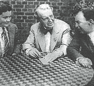
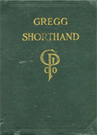

A Web Site dedicated to the
perpetuation of Gregg’s Light-Line Phonography
- Anniversary Manual -
| Home Reporting A Judge’s Charge Dupraw’s Notes Sklarew’s Notes Zoubek’s Notes Pre-Anniversary Description Reference Material Brief Form List Anniversary Description Reading Material Reference Material Brief Form List Most-Used Phrases Simplified Description Brief Form List Dupraw on Note Size Diamond Jubilee Description Brief Form List Expert Brief Form List Series 90 Description Brief Form List Centennial Description Brief Form List Taquigrafía Gregg Gramálogos German Gregg Manual Esperanto Gregg Manual Brief Forms Irish Gregg Manual Gregg Group Gregg Learning Forum Ms. Letha’s SH Site Shorthand³ Omniglot's Entry Wikipedia's Entry Stenospeed Dictation Practice Andrew Owen |
|  Gregg
Shorthand—named after its inventor, John Robert Gregg—is
a system of pen stenography that gained popularity in the United States
in the early twentieth century. However, since the invention of mechanical
stenography, the form lost its appeal to the
public. Only twenty years ago, shorthand classes were seen in nearly
every high school in the country. Now, the overwhelming majority of
high school students today has never seen nor heard of Gregg Shorthand. The purpose of this site is to increase awareness of Gregg Shorthand, and refresh those who learned it and have not used it in several years. However, the year in which one learned it in school affects how he or she writes. As vocabulary and needs change, so does the version of Gregg Shorthand. The current system—according to the owners of the former Gregg Publishing Company, McGraw-Hill—is the Centennial Version. This version is good for business dictation, having more brief forms than its predecessors, the Series 90 and Diamond Jubilee series. Most experts find, though, that for serious court reporting and stenography, the 1949 Simplified and, even better, the 1929 Anniversary Series is most efficient. The series for a person now is dependent on why he or she needs shorthand. If he or she has good interest, determination, and time, Anniversary or Simplified is recommended. If one merely wants to know shorthand to take notes faster without much time studying the system, he or she may use one of the later systems. |
|
 |
This book, Gregg Shorthand: A Light-Line Phonography for the Million (Anniversary Edition), is long out of print. The only way to find this book is to go to just the right libraries, estate sales, and eBay auctions. To save the trouble of hunting down this item, this book in full is now in PDF format. One will find that most Gregg literature is written in this series. The widely-read, but long discontinued Gregg Writer magazine generally uses this series. For later series, use eBay. For the Gregg Shorthand Manual Simplified, Amazon.com sells the still-printed McGraw-Hill book. |
 |
This is the accompanying Gregg Shorthand Dictionary, published a year after the Anniversary Manual. This PDF is mostly text-searchable for fast reference. It contains about 19,000 words, including some very obscure words that are usually quite difficult. This is quite possibly one of the handiest references available to a Gregg Shorthand writer, particularly when it comes to finding the most facile way of writing a particular word. It does not contain a few simple words that are too easy to require an entry. Unlike traditional dictionaries, it lists derivatives and similar words along with their root words. |
 |
This book, 5,000 Most-Used Shorthand Forms, is also long out of print. This 92-page book works a bit like a small dictionary of Gregg Shorthand Anniversary Series outlines. Though it does not contain as many words as the 260-page Gregg Shorthand Dictionary, it can be a very helpful reference to the shorthand writer. The outlines were compiled by Dr. Ernest Horn in the order of the presentation of the words' principles in the manual. To find a particular word, one should use the index found in the back of this reference. |
 |
This book—Fundamental Drills in Gregg Shorthand, assembled by Gertrude Beers and Letha P. Scott and written by Mrs. Richmond—contains very helpful drills in developing shorthand speed. It is written with a different, but very beautiful and regular style by Mrs. Winifred K. Richmond, who wrote the plates to the Anniversary manual and dictionary. It was written to furnish interesting and stimulating reading material, to build shorthand comprehension, to give repetition in order to build confidence in writing outlines, and to furnish material for typing transcripts. It is organized to correspond to the Anniversary manual's organization. |
|  | This book is Gregg Shorthand: A Light-Line Phonography for the Million, the 1916 edition. It is the full manual for a pre-Anniversary Series of Gregg Shorthand, referred to as the fifth edition. This book is about as rare as the Anniversary Manual, and is long out of print. This manual is divided into twenty sections, and does not contain an index in the back, but rather a concise table of contents at the beginning. If one is just starting shorthand, it may be best to stick with the Anniversary or later. This version is still learnable, however, and could be a handy set of different outlines for the use of the shorthand writer. |
| This site includes in its entirety the remarkably rare adaptation of Gregg Shorthand to the International Language, Esperanto. This adaptation was originally made by Ernest L. Jackson in 1918, and is now fully available here in a legible format. Mr. Jackson assumes that the reader of the adaptation has a good understanding of Pre-Simplified Gregg Shorthand. The instruction is in English. | |
|
Preface About Gregg Shorthand Editor's Note A Talk with the Beginner The Alphabet Chapter I Unit 1 Unit 2 Unit 3 Chapter II Unit 4 Unit 5 Unit 6 Chapter III Unit 7 Unit 8 Unit 9 Chapter IV Unit 10 Unit 11 Unit 12 Chapter V Unit 13 Unit 14 Unit 15 Chapter VI Unit 16 Unit 17 Unit 18 Chapter VII Unit 19 Unit 20 Unit 21 Chapter VIII Unit 22 Unit 23 Unit 24 Chapter IX Unit 25 Unit 26 Unit 27 Chapter X Unit 28 Unit 29 Unit 30 Chapter XI Unit 31 Unit 32 Unit 33 Chapter XII Unit 34 Unit 35 Unit 36 |
Design
Copyright ©
Andrew Owen. All Rights Reserved.